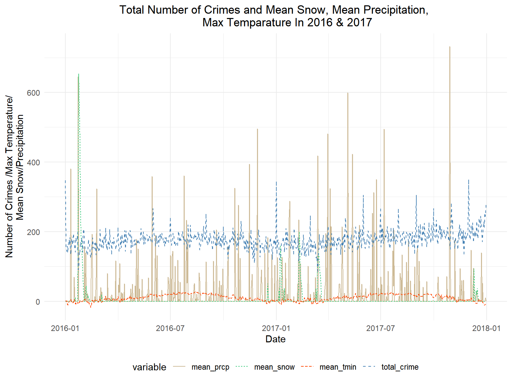
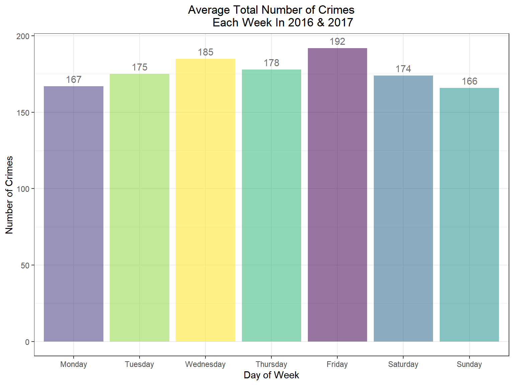
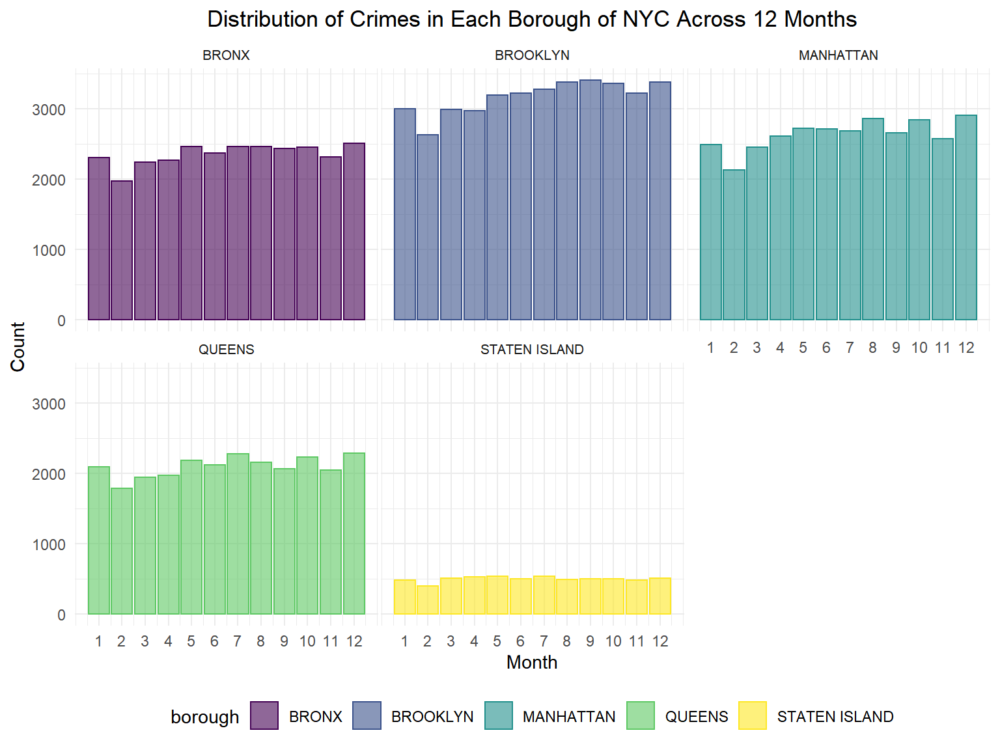
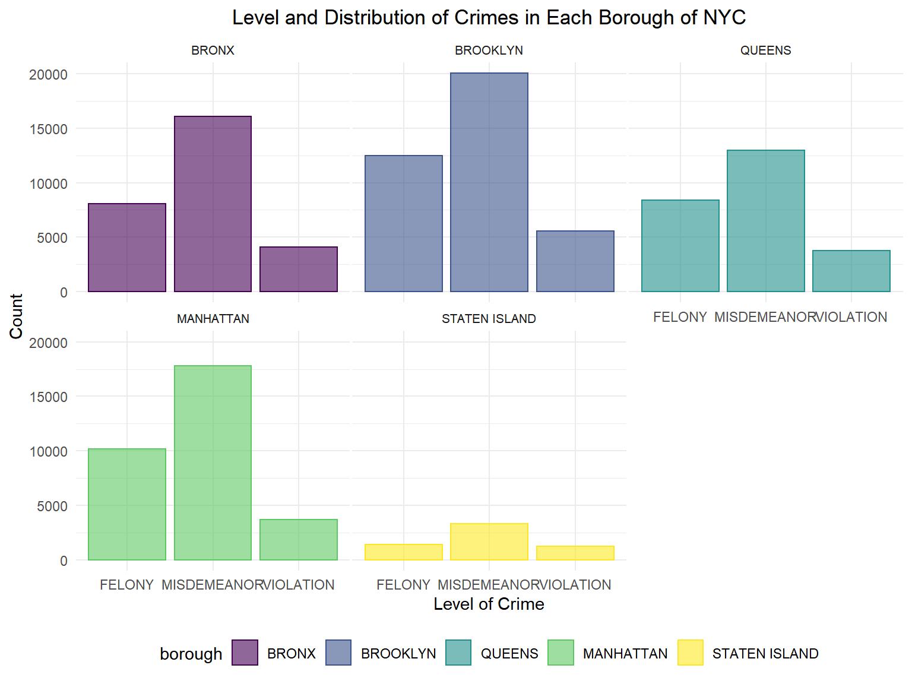
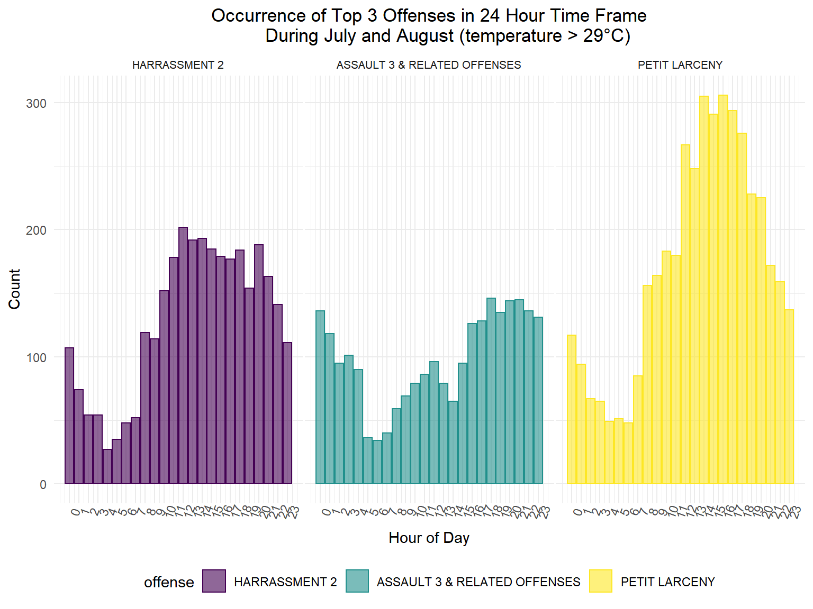
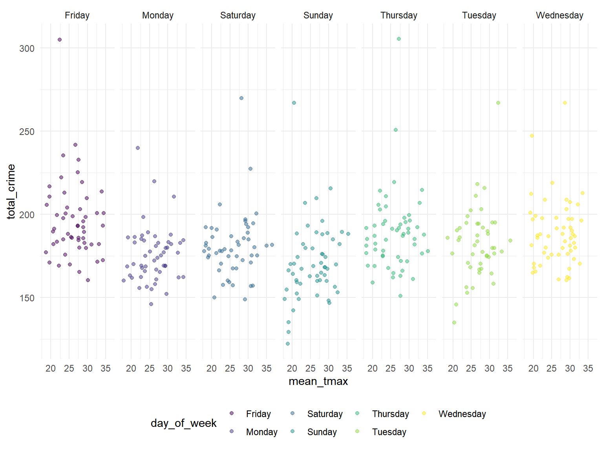
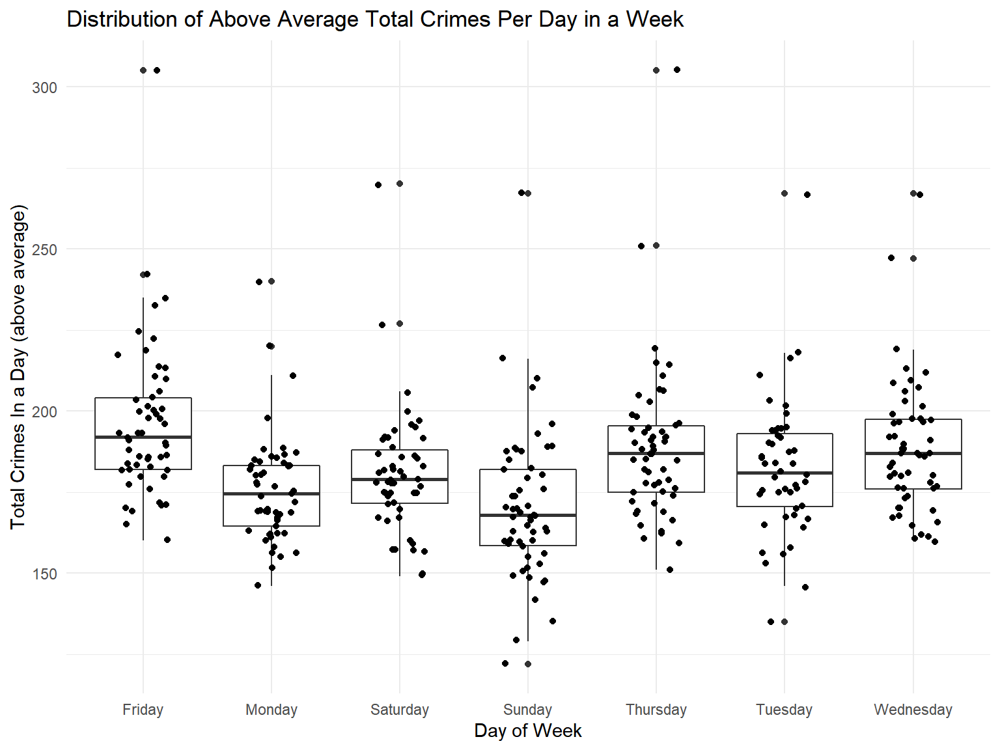

EDA
crime_raw <- read.csv("data/nyc_complaint_data.csv")
crime_df <- crime_raw %>%
janitor::clean_names() %>%
mutate(
date = mdy(cmplnt_fr_dt),
hour_of_day = as.POSIXct(cmplnt_fr_tm, format="%H:%M:%OS"),
borough = boro_nm,
level = law_cat_cd,
offense = ofns_desc,
offense_classification = pd_desc,
place = prem_typ_desc,
suspect_age = susp_age_group,
suspect_race = factor(susp_race),
suspect_sex = factor(recode(susp_sex, "U" = "Unkonwn", "F" = "Female", "M" = "Male")),
victim_age = vic_age_group,
victim_race = factor(vic_race),
victim_sex = factor(recode(vic_sex, "F" = "Female", "M" = "Male", "D" = "Business/Organization", "E" = "PSNY/People of the State of New York"))) %>%
mutate(
day_of_week = factor(weekdays(date)),
mon = month(date),
hour_of_day = hour(hour_of_day)
)
crime_df = crime_df %>%
select(date:mon, latitude,longitude)
weather = rnoaa::meteo_pull_monitors(
c("USW00094728", "USW00094789", "USW00014732"),
var = c("PRCP", "SNOW", "SNWD", "TMAX", "TMIN"),
date_min = "2016-01-01",
date_max = "2017-12-31") %>%
mutate(
name = recode(
id,
USW00094728 = "CentralPark_NY",
USW00094789 = "JFK Airport_NY",
USW00014732 = "La Guardia_NY"),
tmin = tmin / 10,
tmax = tmax / 10) %>%
select(name, id, everything())
average_weather = weather %>%
group_by(date) %>%
summarise(
mean_snow = mean(snwd),
mean_prcp = mean(prcp),
mean_tmin = mean(tmin),
mean_tmax = mean(tmax)
)
new_crime_df = crime_df %>%
group_by(date,mon,day_of_week)%>%
summarize(
total_crime = n(),
) Some exploration
crime_weather = merge(new_crime_df, average_weather, by = "date")
crime_weather1 = crime_weather %>%
select(date, total_crime, mean_tmin, mean_snow, mean_prcp) %>%
gather(key = "variable", value = "value", -date)
crime_weather_plot = ggplot(crime_weather1, aes(x = date, y = value)) +
geom_line(aes(color = variable, linetype = variable)) +
scale_color_manual(values = c("wheat3", "seagreen3", "orangered1", "steelblue")) +
labs(x="Date",
y="Number of Crimes /Max Temperature/
Mean Snow/Precipitation",
title = "Total Number of Crimes and Mean Snow, Mean Precipitation,
Max Temparature In 2016 & 2017") +
theme(legend.position = "bottom", plot.title=element_text(hjust=0.5))
crime_weather_plot
# Crime numbers by month
crime_month = new_crime_df %>%
group_by(mon) %>%
summarize(mean_total_crimes = mean(total_crime)) %>%
rename(month = mon) %>%
mutate(month = as.character(month))
mp = ggplot(crime_month,
aes(x = month, y = mean_total_crimes, fill = month)) +
geom_col(fill = "lightblue",colour = "steelblue") +
geom_text(aes(label = round(mean_total_crimes)), vjust = -0.5, size=3 ) +
labs(x="Month",
y="Number of Crimes",
title = "Average Total Number of Crimes
By Month In 2016 & 2017")+
scale_x_discrete(limits=crime_month$month)+
theme_bw()+
theme(legend.position = "off", plot.title=element_text(hjust=0.5))
mp#Crime and weekdays
crime_weekday = new_crime_df %>%
group_by(day_of_week) %>%
summarise(mean_crime = round(mean(total_crime),0)) %>%
mutate(char = case_when(day_of_week == "Monday" ~ 01,
day_of_week == "Tuesday" ~ 02,
day_of_week == "Wednesday" ~ 03,
day_of_week == "Thursday" ~ 04,
day_of_week == "Friday" ~ 05,
day_of_week == "Saturday" ~ 06,
day_of_week == "Sunday" ~ 07)) %>%
arrange(char) %>% select(-char)
weekday = ggplot(crime_weekday,
aes(x = day_of_week, y = mean_crime, fill = day_of_week, alpha=0.2)) +
geom_col() +
geom_text(aes(label = mean_crime), vjust = -0.5) +
labs(x="Day of Week",
y="Number of Crimes",
title = "Average Total Number of Crimes
Each Week In 2016 & 2017") +
scale_x_discrete(limits=crime_weekday$day_of_week) +
theme_bw() +
theme(legend.position = "off", plot.title=element_text(hjust=0.5))
weekday
#Crime and hours
crime_hour = crime_df %>%
group_by(date,mon,day_of_week, hour_of_day)%>%
summarize(
total_crime = n(),
) %>%
group_by(hour_of_day) %>%
summarize(mean_crime = mean(total_crime))
crime_hour_plot = ggplot(crime_hour,
aes(x = hour_of_day, y = mean_crime, fill = hour_of_day, alpha=0.2)) +
geom_col(fill = "plum4", colour = "powderblue") +
labs(x="Hour of Day",
y="Average Number of Crimes",
title = "Average Total Number of Crimes In 24 Hours
Per Day In 2016 & 2017") +
scale_x_discrete(limits=crime_hour$hour_of_day) +
theme_bw() +
theme(legend.position = "off", plot.title=element_text(hjust=0.5))
crime_hour_plot#Histogram of crimes in 5 boroughs
his1 = crime_df %>% filter(borough != "")%>%
mutate(borough = fct_reorder(borough, mon)) %>%
ggplot(aes(x=mon, color=borough, fill=borough)) +
geom_histogram(alpha=0.6, binwidth = 1, bins = 12, stat= "count") +
scale_x_continuous(breaks=1:12) +
labs(y="Count",
x="Month",
title = "Distribution of Crimes in Each Borough of NYC Across 12 Months") +
theme(legend.position="bottom",
panel.spacing = unit(0.1, "lines"),
strip.text.x = element_text(size = 8),
plot.title=element_text(hjust=0.5)
) +
facet_wrap(~borough)
his1
his2 = crime_df %>% filter(borough != "")%>%
mutate(borough = fct_reorder(borough, hour_of_day)) %>%
ggplot(aes(x=hour_of_day, color=borough, fill=borough)) +
geom_histogram(alpha=0.6, binwidth = 1, bins = 24, stat= "count") +
scale_x_continuous(breaks=0:23) +
labs(y="Count",
x="Hour of Day",
title = "Distribution of Crimes in Each Borough of NYC in 24 Hours") +
theme(legend.position="bottom",
panel.spacing = unit(0.1, "lines"),
strip.text.x = element_text(size = 8),
plot.title=element_text(hjust=0.5),
axis.text.x = element_text(angle=70)
) +
facet_wrap(~borough)
his2
#Level of Crimes and Distribution in Borough
his3 = crime_df %>% filter(borough != "")%>%
mutate(borough = fct_reorder(borough, level)) %>%
ggplot(aes(x=level, color=borough, fill=borough)) +
geom_histogram(alpha=0.6, binwidth = 1, stat= "count") +
labs(y="Count",
x="Level of Crime",
title = "Level and Distribution of Crimes in Each Borough of NYC") +
theme(legend.position="bottom",
panel.spacing = unit(0.1, "lines"),
strip.text.x = element_text(size = 8),
plot.title=element_text(hjust=0.5)
) +
facet_wrap(~borough)
his3
offense_type = crime_df %>%
filter(offense == 'PETIT LARCENY'| offense == 'HARRASSMENT 2'| offense == 'ASSAULT 3 & RELATED OFFENSES')
his4 = offense_type %>% filter(borough != "")%>%
mutate(offense = fct_reorder(offense, borough)) %>%
ggplot(aes(x=borough, color=offense, fill=offense)) +
geom_histogram(alpha=0.6, binwidth = 1, stat= "count") +
labs(y="Count",
x="Borough",
title = "Distribution of Top 3 Offenses in NYC Boroughs") +
theme(legend.position="bottom",
panel.spacing = unit(0.1, "lines"),
strip.text.x = element_text(size = 8),
plot.title=element_text(hjust=1),
axis.text.x = element_text(angle=70)
) +
facet_wrap(~offense)
his4hotmonth = weather %>%
group_by(month = lubridate::floor_date(date, 'month')) %>%
mutate(month = as.numeric(month(month, label = TRUE, abbr = FALSE))) %>%
summarise(mean_tmax=mean(tmax)) %>%
arrange(mean_tmax)
#Months with highest temp: 7, 8
#Relate temperature to offense types
hotcrime = offense_type %>%
filter(mon == 7 | mon == 8) %>%
mutate(offense = fct_reorder(offense, hour_of_day)) %>%
ggplot(aes(x=hour_of_day, color=offense, fill=offense)) +
geom_histogram(alpha=0.6, binwidth = 1, bins = 24, stat= "count") +
scale_x_continuous(breaks=0:23) +
labs(y="Count",
x="Hour of Day",
title = "Occurrence of Top 3 Offenses in 24 Hour Time Frame
During July and August (temperature > 29°C)") +
theme(legend.position="bottom",
panel.spacing = unit(0.1, "lines"),
strip.text.x = element_text(size = 8),
plot.title=element_text(hjust=0.5),
axis.text.x = element_text(angle=70)
) +
facet_wrap(~offense)
hotcrime
#distribution of high mean temp (tmax > mean(mean_tmax)) and total crime per day
hightempcrime = crime_weather %>%
filter(mean_tmax > mean(mean_tmax)) %>%
select(date, day_of_week, total_crime, mean_tmax) %>%
mutate(mean_tmax = as.numeric(mean_tmax))
h1 = ggplot(hightempcrime, aes(x = mean_tmax, y = total_crime, color = day_of_week)) +
geom_point(alpha = .5,position= "jitter") +
facet_grid(. ~ day_of_week)
h1
# Examine whether high mean temp has something to do with more crime occurrence (when crime > mean(crime) per day)
highcrime = hightempcrime %>%
filter(total_crime > mean(total_crime)) %>%
mutate(class_hightemp =
case_when(mean_tmax <= 20 ~ "ok (under or equal to 20°C)",
mean_tmax <= 25 ~ "warm (under or equal to 25°C)",
mean_tmax <= 30 ~ "hot (under or equal to 30°C)",
mean_tmax > 30 ~ "very hot (above 30°C)")) %>%
group_by(class_hightemp) %>% # Variable to be transformed
count() %>%
ungroup() %>%
mutate(perc = `n` / sum(`n`)) %>%
arrange(perc) %>%
mutate(labels = scales::percent(perc))
h2 = ggplot(highcrime, aes(x = "", y = perc, fill = class_hightemp)) +
geom_col() +
geom_text(aes(label = labels),
position = position_stack(vjust = 0.5)) +
coord_polar(theta = "y") +
labs(
x = "Percentage of total crimes per day (above the average)",
y = "Different temperature categories",
title = "Percentage of total crimes per day in 4 high temperature categories"
)
h2
# Examine whether total crime number per day (above average) has something to do with day of week
#boxplot,y=total_crime
h3 = ggplot(hightempcrime, aes(x = day_of_week, y = total_crime)) +
geom_boxplot()+
geom_jitter(shape=16, position=position_jitter(0.2)) +
labs(
x = "Day of Week",
y = "Total Crimes In a Day (above average)",
title = "Distribution of Above Average Total Crimes Per Day in a Week"
)
h3